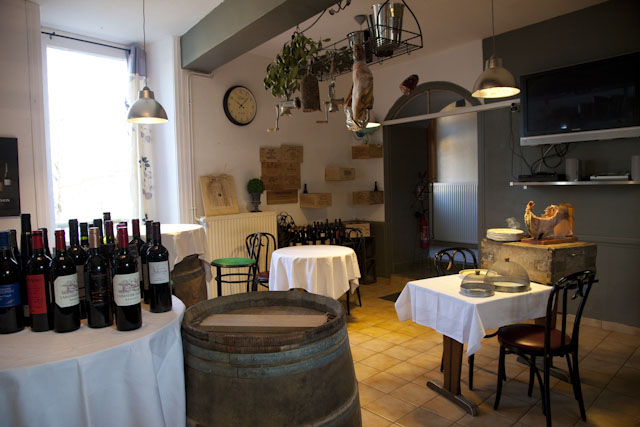
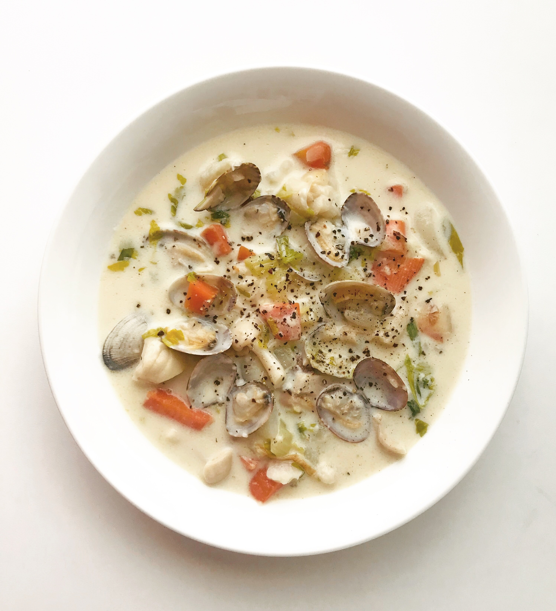
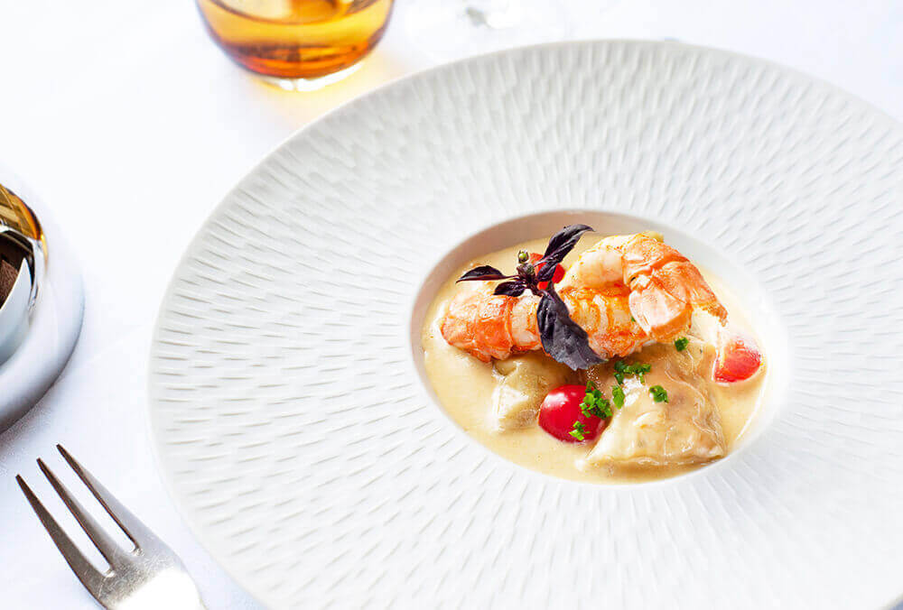
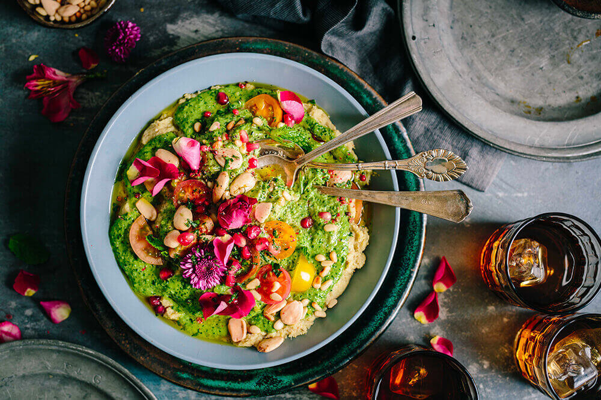
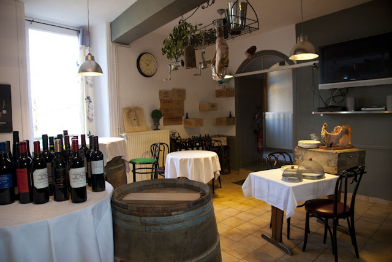
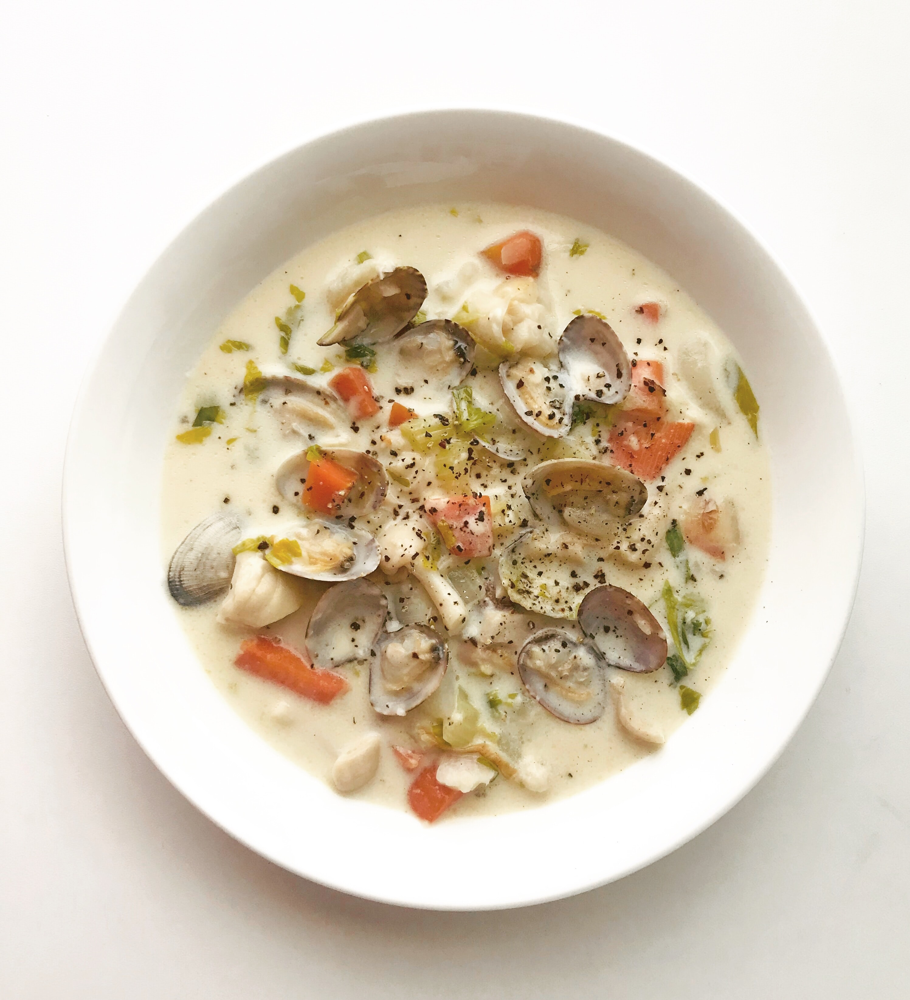
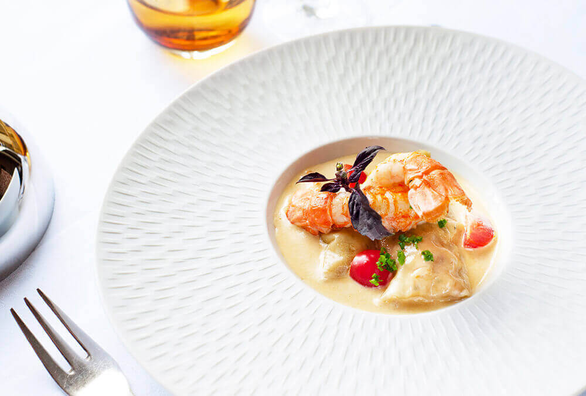
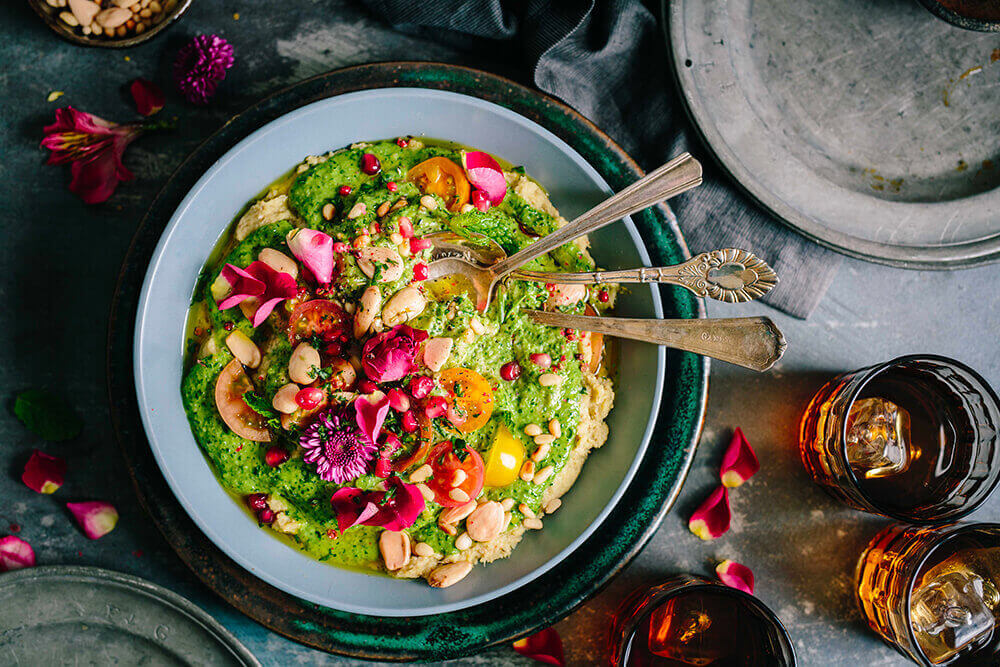

Restaurant gastronomique
Niché au cœur du village d’art de Saint-Juire-Champgillon, le restaurant le Saint-Georges vous accueille dans un cadre contemporain et agréable. Vous pourrez y déguster la cuisine de Willy Lefay. Ce chef talentueux dont le maître mot est l’innovation mais dans le respect des traditions, remet en avant des produits oubliés, pour le plaisir des anciens comme des plus jeunes.


le Saint Georges, c’est aussi un bistrot à vin, où l’on vient déguster un vin et passer un bon moment , jambon et cochonnailles à la coupe. Entre amis installez vous autour d’une barrique et laissez vous guider.


Cuisine gastronomique et ambiance conviviale vous attendent au saint-georges !
 







Belle étape. Un vrai pub, un vrai patron anglais, très chaleureux. De vrais saveurs anglaises : superbe fish and chips, très bons hamburger. Très copieux. Prix raisonnables. Ça va devenir une étape régulière sur ma route des vacances.
Belle étape. Un vrai pub, un vrai patron anglais, très chaleureux. De vrais saveurs anglaises : superbe fish and chips, très bons hamburger. Très copieux. Prix raisonnables. Ça va devenir une étape régulière sur ma route des vacances.
11 Place de la Mairie,
Saint-Juire-Champgillon France
lesaintgeorges3@wanadoo.fr
02 51 27 86 91